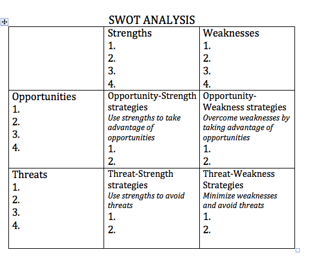
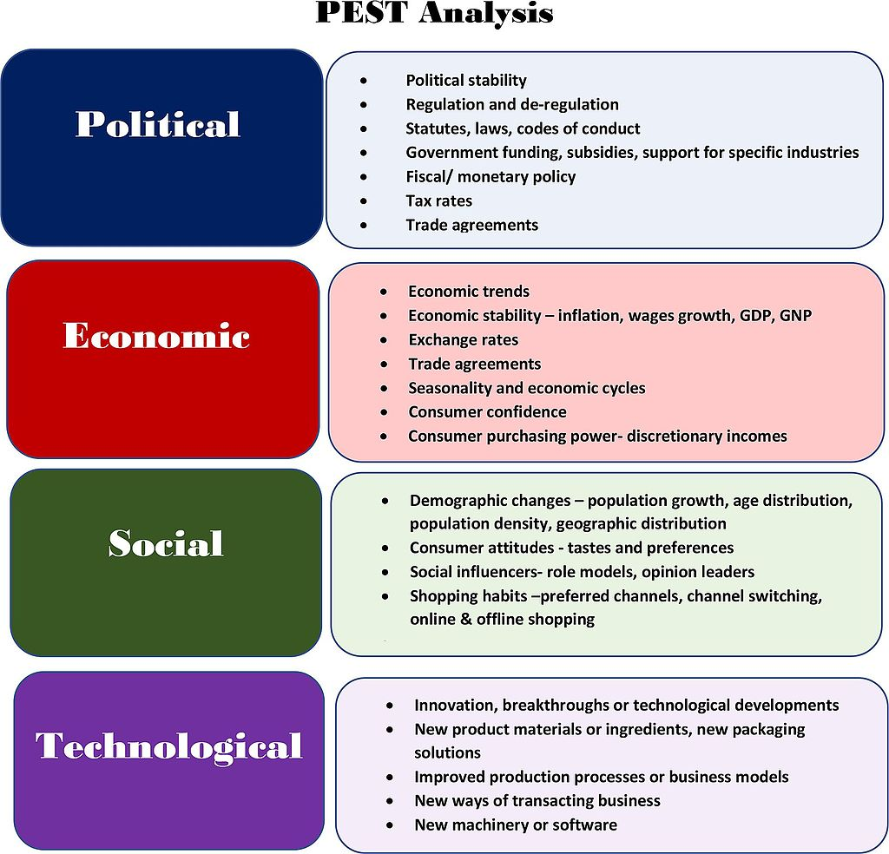
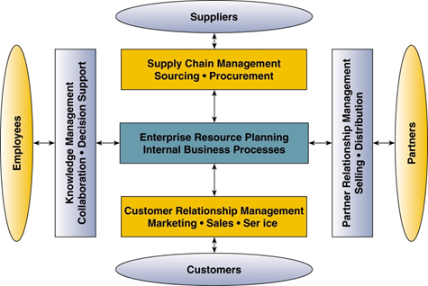

Project Management: Stakeholder Management

Project Stakeholder Management
Project stakeholder management involves both stakeholder identification and analysis. Stakeholder
identification works to identify and address all individuals who are impacted by the project. Stakeholder
analysis works to systematically determine the interest of stakeholders throughout a project by using both
qualitative and quantitative analysis.
There are essentially four processes that are a part of stakeholder management. The first is the identification of stakeholders. The second is planning stakeholder engagement. The third is managing that stakeholder engagement. And the fourth is to monitor stakeholder engagement throughout the project. (Puget Sound Project Management Institute, n.d.; Exams PM, n.d.; Grey Campus, n.d.)
While there are many stakeholders, a key one to be considered is the customer. Often times companies make assumptions about customers or do not give a depth of thought regarding who they are and what they might be thinking. This involves not just marketing to new customers but ongoing relationships with current customers.
Marketing and Customer Relationship Strategies & Tools
Managing your customer relationships can be accomplished with or without the use of technological tools. Business strategies themselves play a strong role. Consider the idea of first mover advantage. With this concept your company is either a product pioneer acting as the first firm to develop a working model or sample in a new product category or a market pioneer where you are the first firm to sell in a new product category.
Pioneering First Mover Advantage
Pioneers are often more likely to have high market share, survive longer, and be market leaders in their product category. There are downsides, however. Some forces against the pioneer advantage include
- Free-rider effect: competitors introduces the same technology with lower costs.
- Technological discontinuities: late entrant uses superior technology to produce a better product before the pioneer.
- Shifts in consumers’ tastes: the late entrants adopt new positioning before pioneers.
- Incumbent inertia: pioneer is deterred from making the investments necessary to remain a market leader.
- Identification of ideal points: best product may become apparent only after the first product is widely introduced.
So, for any company, the question must be asked, does there truly exist the first mover advantage?
Strengths, Opportunities, Weaknesses, and Threats (SWOT) Analysis
SWOT stands for: Strength, Weakness, Opportunity, Threat. A SWOT analysis guides you to identify your organization’s strengths and weaknesses (S-W), as well as broader opportunities and threats (O-T).

A SWOT analysis can offer helpful perspectives at any stage of an effort. You might use it to:
- Explore possibilities for new efforts or solutions to problems.
- Make decisions about the best path for your initiative. Identifying your opportunities for success in context of threats to success can clarify directions and choices.
- Determine where change is possible. If you are at a juncture or turning point, an inventory of your strengths and weaknesses can reveal priorities as well as possibilities.
- Adjust and refine plans mid-course. A new opportunity might open wider avenues, while a new threat could close a path that once existed.
Political, Economic, Social , Technical (PEST) Analysis
PEST Analysis is a simple and widely used tool that helps you analyze the Political, Economic, Socio-Cultural, and Technological changes in your business environment. This helps you understand the big picture forces of change that you're exposed to, and, from this, take advantage of the opportunities they present.

PEST Analysis is useful for four main reasons:
- It helps you to spot business or personal opportunities, and it gives you advanced warning of significant threats.
- It reveals the direction of change within your business environment. This helps you shape what you're doing, so that you work with change, rather than against it.
- It helps you avoid starting projects that are likely to fail, for reasons beyond your control.
- It can help you break free of unconscious assumptions when you enter a new country, region, or market; because it helps you develop an objective view of this new environment.
Segmentation of Market
Another marketing and customer relationship business strategy relates to potential segmentation of the market or markets being served. Segmentation is dividing the total heterogeneous market for a good or service into smaller groups which are more homogeneous. This is often used in marketing in order to better satisfy the needs of categories of customers, whether by region, desires, characteristics or other.
In some cases, companies determine it is best to segment the market, or divide the customer base into smaller categories. In other cases, companies determine it is best to combine segments which may have previously been since as separate or distinct. There are benefits and drawbacks to both methods.
Combining
Combining market segments can have the benefits of increasing overall target market sizes, achieving economies of scale, and requiring less investment because a marketing mix is developed for all combined segments. However, as the target market is enlarged by combining several segments, it becomes less homogeneous and then it is very hard to develop a marketing mix for all customers in the market. Also, competitors can easily draw customers by offering marketing mix to more homogeneous sub-segments of the combined target market.
Dividing
Dividing market segments can have the benefits of achieving maximum competitive advantage, minimizing competition, and focusing on satisfaction of specific segments. It can also generate bigger sales by concentrating on a homogeneous segment (e.g. niche marketing). However, in the case of diving market segments, the chosen target market, a subset of all segments, may not be big enough.
Technological Systems used for Managing Business Relationships
There are a number of acronyms that are often used in conjunction with technological systems relating to our relations to our customers and other stakeholders. Here are some of the most common ones:
- Enterprise Resource Planning (ERP) - used to track relations with employees, customers, suppliers, and partners as well as to manage internal processes. Both CRM and SRM below are often a part of a larger ERP system. Common categories found in ERP systems include: production planning, integrated logistics, sales distribution, order management, human resources, and accounting and finance.
- Customer Relationship Management (CRM) - used to track relations and interactions with customers including marketing, sales, and service.
- Supply Chain Management (SRM) - used to track relations and interactions with suppliers including sourcing and procurement.
Below diagram displays inter-connections between the different types of systems and business areas of focus.

ERP-CRM-SCM Systems
The use of systems such as these are intended to improve quality and efficiency, decrease costs, improve decision making, and enhance the companies agility. However, this only works if the systems are implemented and used properly. Underestimating the complexity of planning, development, or training needed can, and likely will, cause failure.
Customer Relationship Management
Customer relationship management (CRM) could be considered the intersection between marketing and business strategy. It is a customer-centric strategy and philosophy to build and maintain the best relationships with the right clients. It involves understanding your marketplace, as well as your customer's needs, wants. and expectations with the goal of having profitable customer relationships. Customer relationship management as strategy and philosophy means that customer-centricity has to be a way of life for an organization. CRM can’t be left to IT or to marketing; rather, building the right relationship with each customer has to be a primary goal for everyone in the organization. Imagine going to a fancy restaurant. Our best experiences are often not just due to the food, but due to how we are treated by everyone employed there. The waitresses, cashiers, service staff, maintenance team, cleaning staff, you name it. We want to feel like we are important--special--and we are willing to pay a good sum for it.
Some key areas include: marketing, promotion, sales, data mining and analysis, key performance indicators (KPIs), opportunity management, and measurement and tracking.
Customer Relationship Management (CRM) Systems
Customer relationship management manages a company’s interactions with customers, clients and sales prospects. It often uses technology, known as CRM systems, to organize, automate, and synchronize business processes—principally sales activities, but also those for marketing, customer service, and technical support. Sometimes -- actually increasingly more often-- there is a system on the back end that manages the data and subsequent information that helps in our handling of CRM. Think of a rewards card as an example. The free card gives you access to special deals but in turn, the company can track everything you purchase and when. Then, the company can offer you targetted offers based in your purchasing habits. These systems are usually called CRM systems. The overall goals of CRM systems are are to help the company find, attract, and win new clients, nurture and retain those the company already has, entice former clients back into the fold, and reduce the costs of marketing and client service (Boundless, n.d.).
The primary idea of a CRM system is to support and integrated and collaborative relationship between a business
and it's customers throughout the customer life cycle (which includes acquisition, enhancement, and retention).
CRM systems offer functional solutions to areas such as direct marketing, retention or loyalty programs, contact
and account management, proactive service, sales force automation, customer support, and cross-selling or
up-selling. Upselling is the practice of encouraging customers to purchase a comparable higher-end product than
the one in question, while cross-selling invites customers to buy related or complementary items Using
technology-based CRM systems can help companies identify and target the best customers, track customer
information and interactions, and customize or personalize produces and services offered. CRM software and
technologies can aid a customer-centric strategy by equipping the sales force and management alike to better
manage the critical relationship between current and potential clients and the firm. One of the greatest ways
CRM systems can be a tool for salespeople is through the creation of visibility. Visibility by easily seeing and
understanding customer accounts and relationships allows a sales
representative to build, grow and maintain the right level of customer service.
References
Exams PM (n.d.). PMBOK 6th Edition PDF Summary. Retrieved January 1, 2021 from https://www.examspm.com/pmbok-6th-edition-pdf/
Florentine, Sharon (2017). IT project success rates finally improving. CIO. Retrieved January 9, 2021 from https://www.cio.com/article/3174516/it-project-success-rates-finally-improving.html
Grey Campus (n.d.) Stakeholder Management Overview. Retrieved January 1, 2021 from https://www.greycampus.com/opencampus/project-management-professional/stakeholder-management-overview
Puget Sound Project Management Institute (n.d.). PMBOK study outline. Retrieved January 1, 2021 from http://pugetsoundpmi.org/images/downloads/PMP_Study_Groups_Downloads/pmbok_study_guide.doc
Wikimedia Commons (2008). Project Management Lifecycle.jpg. Retrieved January 1, 2021 from https://commons.wikimedia.org/wiki/File:Project_Management_(phases).png
Wikimedia Commons (2014). Project Management Lifecycle.jpg. Retrieved January 1, 2021 from https://commons.wikimedia.org/wiki/File:Project_Management_Lifecycle.jpg
University of Massachusetts Dartmouth. (n.d.). Decision-making process. Retrieved January 9, 2021 from https://www.umassd.edu/fycm/decision-making/process/